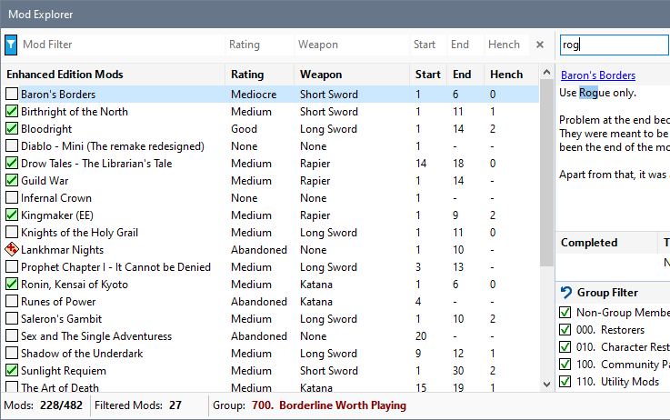

Click in the Notes filter box and start typing characters to use as the Notes filter. The list is updated as you type and the current Notes panel highlights the first occurrence of the text you entered.

Filter by Start, End or Henchman
Filter by Notes